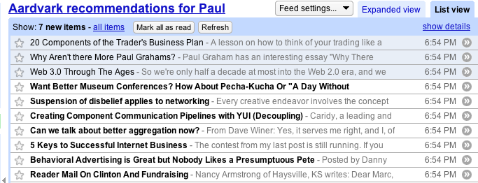

Using Aardvark
We didn't want to build yet another blog reader, everyone already has their favorite way to read blogs - and we didn't want to spend a lot of time crafting an attractive web interface like the Findory. Instead, we wanted to focus primarily on the back-end, on the quality of the recommendations. So instead of spending our time writing a fancy blog reader that you wouldn't want to use anyway, we just made it work with our favorite blog reader: Google Reader.
{kind=link}
Here's how it works. Read your blogs in Google Reader like you always do. When you read an item that is particularly interesting add a star (using the Google Reader 'add star' link). Over time you should build up a pretty good collection of items that represents your interest. For Aardvark to generate recommendations for you, we need to learn what your preferences are. Luckily, the Google Reader allows you to export your starred items as a feed.
In Google Reader, navigate to your settings/tags section, where you can 'view public page' for your starred items. On this page you'll find a link to your starred item feed. Copy that so you can paste it into Aardvark. Here are my starred items.
Now you are ready to get recommendations from Aardvark. First, login to Aardvark (note that this isn't publicly available yet).
You can use your OpenID to register. When you register you paste in the URL to your starred item feed. Now Aardvark can notice the items that you are starring and generate recommendations for you based upon these items.
Once you register, Aardvark will give you a few feeds that you can add to Google Reader. This is where Aardvark will send your recommendations:
After you add the recommendation feed to Google Reader, Aardvark will keep the feed filled with items that you might find interesting:

Well, there you have it, a quick tour of how you can use Aardvark to get blog recommendations. We aren't quite ready to make it available to the general public - but if you think you might be interested, you can at least start to star items in Google Reader, so that when we are ready, you'll be ready.
BTW, Jeff built the web interface and integrated the OpenId support. The site really looks great.
Sounds good
does it work with just the starred item feed or could I also give it my shared items feed? As I have been keeping a shared item list for quite a while and would be a better source to plug in....
Ta
Posted by Phil on April 25, 2008 at 09:27 AM EDT #
@phil - yes you can use your shared items feed, or really any feed at all. So for instance, I could use Aardvark to find content that would be good to write about in this blog, but just giving the feed for Duke Listens to aardvark.
Posted by Paul on April 25, 2008 at 09:44 AM EDT #
First, login to Aardvark (note that this isn't publicly available yet).
Is this going to be publicly available
Posted by Niraj J on April 25, 2008 at 06:55 PM EDT #
Posted by aardvark on April 27, 2008 at 07:00 AM EDT #
When can we try it out? Has it been released yet?
Posted by James Brunskill on May 14, 2008 at 09:33 PM EDT #